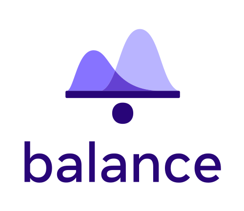

A python package for balancing biased data samples
Easy to Use
Provides a simple workflow, aiming to empower researcher with minimal background in Python or programming.
End-to-End Workflow
Provides a full workflow: from understanding the biases in the data, producing weights to balance the data, evaluating the quality of the weights, and producing weighted estimations.
Open Source Python Software
The balance package is (one of a handful of) open-source survey statistics software written in Python. It leverages Python's advantages of being open sourced, well-supported, easy to learn and flexible environment, which is used for production systems in the industry and academic research.